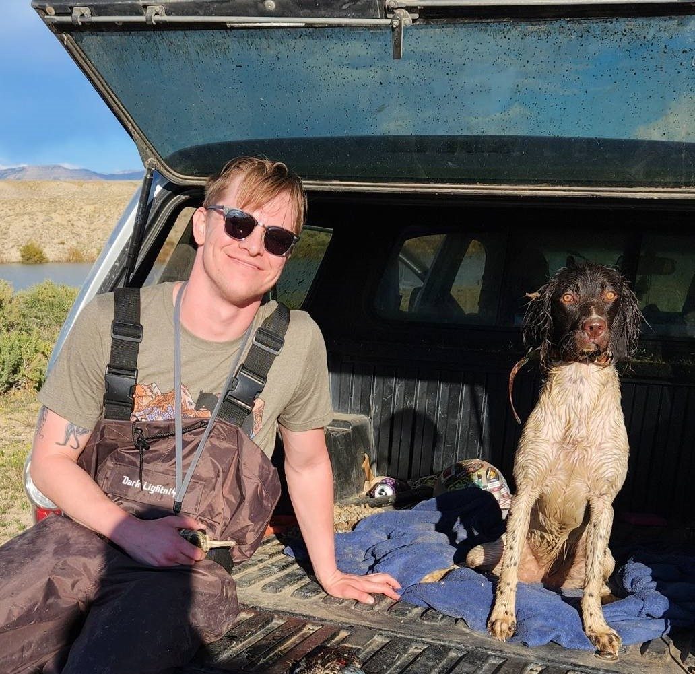

Behind the Numbers: A Journey Anchored in
Programming and Strategic Leadership.
About Me
From a young age, I was exposed to the worlds of entrepreneurship and science through my parents. During high school, I gained valuable experience working in my mother's hospitality business, where I learned the significance of operational efficiency and effectiveness. Simultaneously, my father instilled in me critical thinking and problem-solving skills through various building and repair projects.
Starting with my role as an assistant general manager in a family business to leading operations at JAR Inc. in Boulder, Colorado, I've harnessed a blend of leadership and analytical prowess, guiding teams of up to 45 and diving deep into data analysis and programming. My journey led me to Colorado Mesa University, where I excelled in a Business Analytics and Management program, graduating Summa Cum Laude with a 4.0 GPA and earning recognition from the Phi Theta Kappa honors society. My academic and self-directed learning, accompanied by years of hands-on professional experience, has spanned across big data analytics, software engineering, machine learning, database management, and leadership development, alongside a continuous passion for learning.
Work Experience
| Dates | Position | Company |
|---|---|---|
| 2022 - Present | Data Quality Analyst | Shiplify, LLC - Atlanta, GA (Remote) |
| 2014 - 2020 | Operations Manager | JAR Inc. - Boulder, CO |
Outside of work, I find joy in training my working Spaniel, Daffy, in the field. Activities like fishing, snowboarding and hiking are among our favorite pastimes. Collaborating with my father, I also indulge in working on classic and modern sports cars. I firmly believe that learning is a lifelong pursuit, whether it involves acquiring new skills or embracing philosophical lessons. Each day presents an opportunity to broaden my knowledge and understanding.
“Education is the kindling of a flame, not the filling of a vessel.”
― Socrates